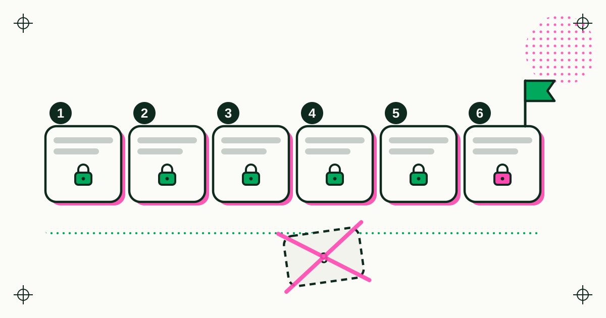

Chunked backup encryption: why large clone backups failed and how Duo Clone fixed it

Duo Clone 0.1.37 writes a backup as a series of AES-GCM chunks that are each sealed and verified on their own, instead of one encryption pass over the whole file, so a copy with hundreds of megabytes of data now backs up without running out of memory. Backup files from earlier versions still restore. Every chunk is tied to its position and to a last-chunk flag, so a reordered, truncated or extended backup is rejected.
This note explains why a single GCM pass fails on large data, how chunking fixes it, which properties the chunked design must keep, and what changed around it in backup and restore.
Why did large backups fail?
A backup is the copy's data zipped and encrypted with AES-256-GCM, and encrypting the whole file in one pass made Android's crypto provider hold all of the data in memory until the final call. GCM is an authenticated mode: it produces ciphertext plus a tag, and the tag is checked when the file is decrypted. Google's Cipher reference describes the tag as appended to the ciphertext on encryption and verified on decryption, and its Cryptography guide recommends AES-GCM with 256-bit keys when you are free to choose.
On Android the provider behind AES/GCM/NoPadding is Conscrypt. Its AEAD cipher holds the whole input in memory until doFinal returns. A copy of a few hundred megabytes could therefore fail to back up, and that size is easy to reach for a chat app with a media cache. The failure was a memory limit of the one-pass design, not a problem with the key or the password.
What is a chunked backup?
A chunked backup cuts the stream into fixed-size pieces of about 1 MiB, seals each piece with AES-GCM on its own, and writes it out before starting the next. Only one chunk is in memory at a time, so memory use no longer grows with the size of the copy. Restore works the same way in reverse: it reads a chunk, checks its tag and only then writes the plaintext out.
The idea is not new. Google's Tink library describes it as streaming authenticated encryption: it is useful "when the data to be encrypted is too large to be processed in a single step", and encryption "is done in segments, which are bound to their location within a ciphertext and cannot be removed or reordered". Tink's recommended variant also uses 1 MB segments.
Which properties must a chunked design keep?
Splitting a file into chunks creates three new ways to go wrong: a repeated nonce, a missing position, and a missing end. The design closes each one.
- No nonce is used twice under one key. The
Cipherreference states that GCM has a uniqueness requirement on IVs for a given key, and that repeating them makes encryption subject to forgery attacks. Each backup file gets its own random value, and every chunk adds its own chunk number, so no two chunks share a nonce. - Each chunk authenticates its place. The associated data of every chunk includes the chunk number, so a chunk moved to another position fails its tag check.
- The end is authenticated. The associated data carries a flag that is set only on the last chunk. A file cut short is missing the flagged chunk and is rejected as truncated, and data added after the flagged chunk is rejected as trailing data.
Associated data is the part of GCM made for this. It is authenticated but not encrypted, and NIST's GCM specification, SP 800-38D, defines the mode and its inputs. The Cipher reference adds one practical rule: supply all associated data before the ciphertext, so the provider does not have to buffer.
The result is that a damaged backup stops the restore at the first bad chunk, and a wrong password fails at the first chunk too, without reading the rest of the file.
What else changed in backup and restore?
Three smaller changes shipped in the same version, all visible in the changelog.
- Restore reads the file straight from where you saved it, instead of first copying it into an encrypted temporary file on the phone. A restore therefore needs less free space.
- When the phone or the folder you picked is out of space, the app says Not enough free storage for the backup. Free some space on the phone or the destination and try again. Before, this case showed a generic storage error.
- The limit on how much data a restore will unpack was raised, so large copies are not refused as oversized.
Backups made by earlier versions still restore. A backup written by 0.1.37 or later is meant for 0.1.37 or later, so update before you restore one on another phone. If you only want the steps for making and restoring a backup in the app, a plain-language walk-through of backing up a cloned app is on the Duo Clone website.
What does a backup not protect against?
Encryption keeps the file private and detects tampering, but it cannot recover a forgotten password, and it protects the file only, not the phone it was made on. The app warns about both before it writes anything: the backup holds the signed-in account and personal data of the copy, and "if you forget this password, the backup cannot be restored." Keep the file somewhere safe and do not share it.
What should other developers take from this?
If you encrypt large files with AES-GCM on Android, do not wrap the whole file in one cipher call: encrypt in chunks, bind the chunk number and a last-chunk flag into the associated data, and never reuse a nonce. Test with data much larger than your heap allows, because a design that works on a 5 MB file can fail on a 500 MB one. If you can take a dependency, start from Tink's Streaming AEAD, which already implements the segment scheme and documents its limits.
Sources
- Duo Clone changelog, version 0.1.37 (25 November 2026): backups in pieces, restore from the saved file, out-of-space message.
- Android Developers, javax.crypto.Cipher: authenticated encryption, associated data and the GCM IV uniqueness requirement (read 27 November 2026).
- Android Developers, Cryptography: recommended algorithms, AES/GCM/NoPadding with 256-bit keys (read 27 November 2026).
- Google for Developers, Tink: Streaming Authenticated Encryption with Associated Data (read 27 November 2026).
- NIST, SP 800-38D, Galois/Counter Mode (GCM) and GMAC, November 2007 (read 27 November 2026).